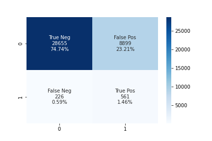
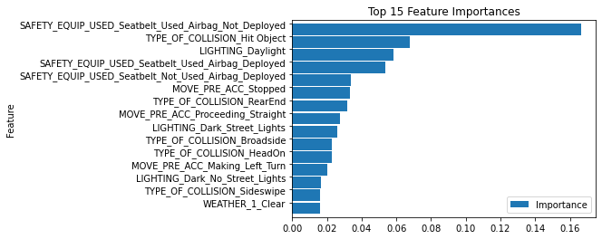
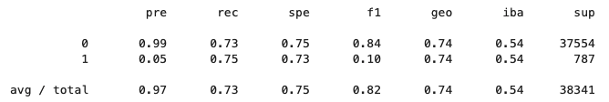
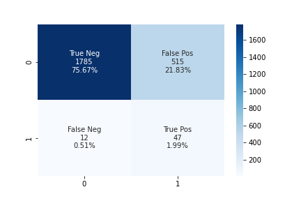
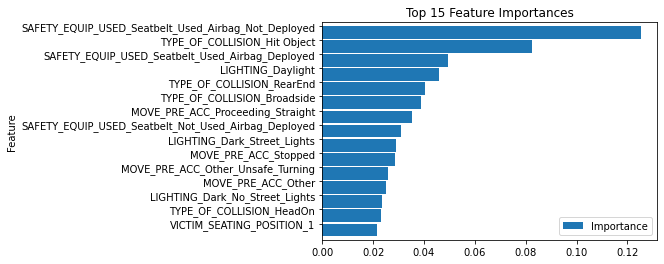
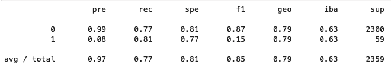
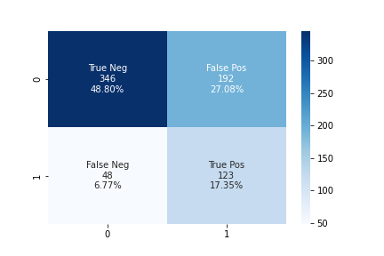
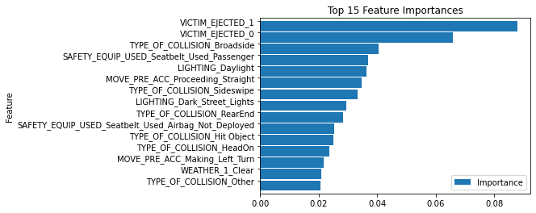
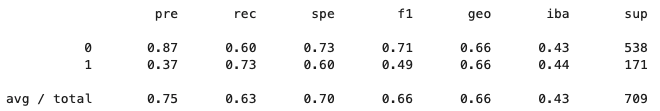

Accident Severity Analysis
Machine Learning to Identify Accident Severity Factors
Welcome to the LA Collision Analysis Dashboard! Using data sourced from [Transportation Injury Mapping System](https://tims.berkeley.edu) an analysis of the collision severity factors was conducted. The goal of this project is to use machine learning and data analysis to The summary of the data displayed below highlights the size of the dataset and an overview of the accident condition data from the dataset. From the data it shows that the general conditions during accidents are normal with minimal extreme conditions observed.

The number and distribution of accidents in LA County show a wide distribution across most motorways. Daytime collisions are the dominated observation with peaks during morning and evening commute hours. The distribution of accidents shows a consistent trend year over year with peaks in October and the lowest accident rates in January and February. An increase in fatalities year over year are observed which does not correspond to the accident number during the same period.
Data related to the types of collisions observed are presented to show the trends observed based on the dataset. The accident types show dominate rear-end and broadside accidents observed. The collision data shows daily trends with morning and evening commutes having the greatest number of collisions with Friday afternoon being the highest number. Driver violations show speed and right-of-way offences are linked to the most collisions. Noting the age of victims involved in collisions there is a significant spike observed between the ages of 21-29.

The model created using the passenger car data had and accuracy of 75.96% which is a moderate indicator of predictability using this data. The model was better at predicting the non-severe injuries with 24% false positives versus 27% false negatives for severe injures. This is reflected in the F1 score that has an 86% for non-severe and 11% for severe injuries. As this is an unbalanced model with severe injuries being represented less in the data it shows the challenges of creating an accurate model. Based on the analysis the top importances identified using this model the factors that contributed to the predictions were identified. These can be investigated further to evaluate the key factor and how they correspond to severe injuries as observed in the data.
| Confusion Matrix | Top Importance features |
|  |  |
| Classification report ML Passenger Cars | |
|  | |
The analysis of the collisions involving pickup trucks involved a much smaller sample size of only 9435 collisions. This model had a higher accuracy than observed in the passenger car model with a calculated value of 77.6% which also makes it a moderately accurate model. An analysis of the model show that it has an 28% false positive prediction and a 20% false negative indicating that this model was stronger at predicting severe injuries than observed in the model create using the passenger car data. The top importances highlighted some key indicators for injury severity and using this information further analysis of these key factors in relation to the severity of the injuries can be conducted. Again this model involved unbalanced data which adds to the challenge of the creation of an accurate predictive model.
| Confusion Matrix | Top Importance features |
|  |  |
| Classification report ML Trucks | |
|  | |
The analysis of the motorcycle data contained a much smaller dataset containing only 2835 incidents. The accuracy of the model was much lower at 66.14% making it a much less dependable model for predicting the severity of the injuries in the collision. This was evident in the 36% false positives observed from the testing set. There were 28% false negatives identified indicating that the model was better at predicting severe injuries however the model is limited in its predictive strength. The top importances identified showed two categories contributed the most to the model which involved victim sobriety and if the victim was ejected from the vehicle. These factors can be used for further analysis on the dataset to see how they contributed to the severity of the accidents.
| Confusion Matrix | Top Importance features |
|  |  |
| Classification report ML Motorcycle/Scooters | |
|  | |
The top features identified with the machine learning give some insight into what factors correspond to severe injury. Using the graphs below the key features can be filtered by vehicle and the key features highlighted to observe what features were identified and the % of collisions and % of severe injuries corresponding to each feature. This allows the identification of positive and negative identifiers which gives greater insight into the findings from the BRFC models.